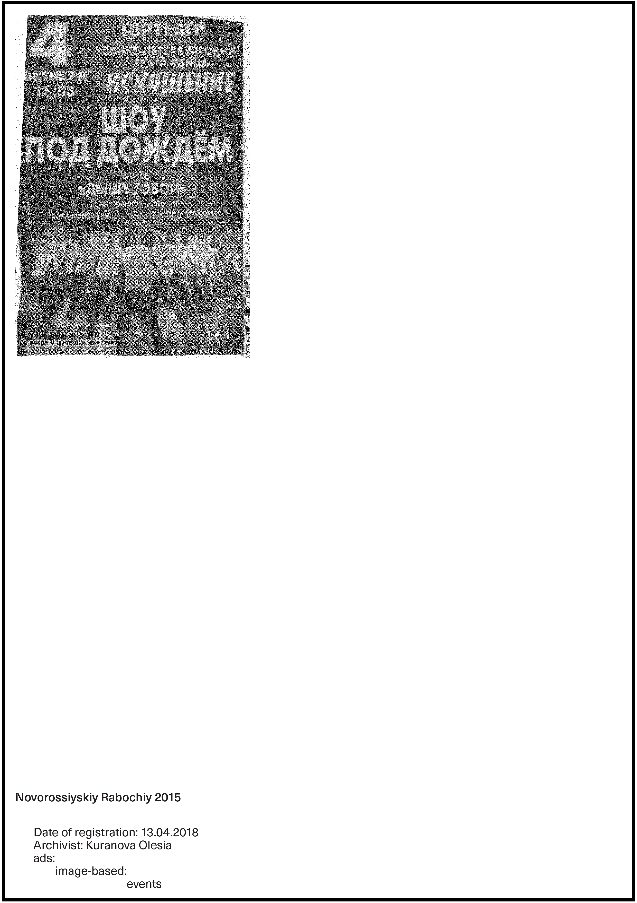

<!-- <!DOCTYPE html>
<html lang="en">
  <head>
    <meta charset="utf-8">
    <title>hebrarium MSU publication</title>
	  <link rel="stylesheet" type="text/css" href="style/style.css">
	  <link rel="stylesheet" type="text/css" href="style/reset.css">
    <link rel="icon" type="image/png" href="images/favicon.png" sizes="32x32"/>
  </head>
  <body>
    <div class="wrapper">
      <div class="title">
    <p>hebrarium MSU publication</p>
     </div>
      <div class="hebrarium-1-opened">
      <a href="index.html"></a>
      </div>
      <div class="hebrarium-2-opened">
        <p></p>
        </div>
      <div class="back-line">
       <a href="index.html">back to the white board</a>
      </div>
      </div>

    <div class="description">
      <p>The publication showcases the image archive with the caption to each image. The caption consist of the name and date of the newspaper it came from, date of the registration, archivist’s name and the categories of the archive image was put in.
All images and text are aligned left, giving the safe space for images of different dimensions. The name and date of the source is set in bold and outdented from the other information. The categories and subcategories are layouted as “steps” for people to identify the hierarchy.
The main categories are: ads, animals, machines, people, graphics and newspaper specifics.
The cover for the publication shows the system of categories. It is handwritten to refer back to the process of finding/choosing/cutting/categorising and scanning of images done by hand.
The finished print looks abstract but might resemble the initial inspiration and that is what I like about it. It has the feel of it’s starting point, but is left for interpretation and attentive examination at the same time.
</p>
    </div>
<script src="script/simpledraw.js"></script>
<script src="https://cdnjs.cloudflare.com/ajax/libs/p5.js/0.7.2/p5.min.js"></script>
<script src="https://cdnjs.cloudflare.com/ajax/libs/p5.js/0.7.2/addons/p5.dom.min.js"></script>
<script src="https://cdnjs.cloudflare.com/ajax/libs/p5.js/0.7.2/addons/p5.sound.min.js"></script>
  </body>
</html> -->
